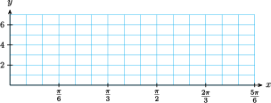
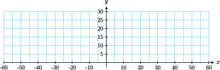

Section 7.4 Chapter 7 Summary and Review
Subsection Key Concepts
- Changes to the amplitude, period, and midline of the basic sine and cosine graphs are called transformations. Changing the midline shifts the graph vertically, changing the amplitude stretches or compresses the graph vertically, and changing the period stretches or compresses the graph horizontally.
- The order in which we apply transformations to a function makes a difference in the graph.
Amplitude, Period, and Midline of Sinusoidal Functions.
- The graph of\begin{equation*} y=A\cos x ~~~~\text{or}~~~~ y=A\sin x \end{equation*}has amplitude \(\abs A\text{.}\)
- The graph of\begin{equation*} y=\cos Bx ~~~~\text{or}~~~~ y=\sin Bx \end{equation*}has period \(\dfrac{2\pi}{B}\text{.}\)
- The graph of\begin{equation*} y=k+\cos x ~~~~\text{or}~~~~ y=k+\sin x \end{equation*}has midline \(y=k\text{.}\)
- The graph of
Horizontal Shifts.
The graphs of
\begin{equation*} y = \sin (x-h)~~~~ \text{and}~~~~ t = \cos (x-h) \end{equation*}are shifted horizontally compared to the graphs of \(y = \sin x\) and \(y = \cos x\text{.}\)
- If \(h \gt 0\text{,}\) the graph is shifted to the right.
- If \(h \lt 0\text{,}\) the graph is shifted to the left.
Standard Form for Sinusoidal Functions.
The graphs of the functions
\begin{equation*} y = A\sin B(x-h) + k~~~~ \text {and}~~~~ y = A\cos B(x-h) + k \end{equation*}are transformations of the sine and cosine graphs.
- The amplitude is \(\abs{A}\text{.}\)
- The midline is \(y = k\text{.}\)
- The period is \(\dfrac{2\pi}{\abs{B}},~~B \not= 0\text{.}\)
- The horizontal shift is \(h\) units to the right if \(h\) is positive, and \(h\) units to the left if \(h\) is negative.
Solutions of Trigonometric Equations.
- The equation \(\cos \theta = k, ~~ -1\lt k \lt 1\text{,}\) has two solutions between \(0\) and \(2\pi\text{:}\)\begin{equation*} \theta_{1}=\cos^{-1}(k)~~ \text{and}~~ \theta_{2}=2\pi -\theta_{1} \end{equation*}
- The equation \(\sin \theta = k, ~~ -1\lt k \lt 1\text{,}\) has two solutions between \(0\) and \(2\pi\text{:}\)\begin{equation*} \text{If}~k \gt 0:~~ \theta_{1} =\sin^{-1}(k)~~ \text{and}~~ \theta_{2}=\pi -\theta_{1} \end{equation*}\begin{equation*} \text{If}~k \lt 0:~~ \theta_{1}=\sin^{-1}(k) + 2\pi ~~ \text{and}~~ \theta_{2}=\pi -\sin^{-1}(k) \end{equation*}
- The equation \(\tan \theta = k\text{,}\) has two solutions between \(0\) and \(2\pi\text{:}\)\begin{equation*} \text{If}~k \gt 0:~~ \theta_{1}=\tan^{-1}(k)~~ \text{and}~~ \theta_{2}=\pi +\theta_{1} \end{equation*}\begin{equation*} \text{If}~k \lt 0:~~ \theta_{1}=\tan^{-1}(k) + \pi ~~ \text{and}~~ \theta_{2}=\pi +\theta_{1} \end{equation*}
- The equation \(\cos \theta = k, ~~ -1\lt k \lt 1\text{,}\) has two solutions between \(0\) and \(2\pi\text{:}\)
- If \(n\) is a positive integer, the equations \(\sin n\theta = k\) and \(\cos n\theta = k\) each have \(2n\) solutions between \(0\) and \(2\pi\text{,}\) for \(-1\lt k \lt 1\text{.}\)
- The equation \(\tan n\theta = k\) has one solution in each cycle of the graph.
Using a Substitution to Solve Trigonometric Equations.
To solve the equation \(\sin (Bx+C)=k\) or \(\cos (Bx+C)=k\text{:}\)
- Substitute \(\theta = Bx+C\text{,}\) and find two solutions for \(\sin \theta = k\) or \(\cos \theta = k\text{.}\)
- Replace \(\theta\) by \(Bx+C\) in each solution, and solve for \(x\text{.}\)
- Find the other solutions by adding multiples of \(\dfrac{2\pi}{B}\) to the first two solutions.
To solve the equation \(\tan (Bx+C)=k\text{:}\)
- Substitute \(\theta = Bx+C\text{,}\) and find one solution for \(\tan \theta = k\text{.}\)
- Replace \(\theta\) by \(Bx+C\) and solve for \(x\text{.}\)
- Find the other solutions by adding multiples of \(\dfrac{\pi}{B}\) to the first solution.
Exercises Review Problems
For Problems 1–4, state the amplitude, period, and midline of the graph.
1.
\(y=4-2\sin 3x\)
2.
\(y=1+5\cos \dfrac{x}{2}\)
3.
\(y=2.5\cos \pi x - 2\)
4.
\(y=0.8\sin \dfrac{\pi x}{6} + 0.3\)
For Problems 5–8, use transformations to sketch graphs of the functions.
5.
\(f(t)=2+3\cos t\)
6.
\(g(t)=-4-2\sin t\)
7.
\(h(w)=-4\sin \pi w\)
8.
\(q(w)=3-\cos \dfrac{w}{2}\)
For Problems 9–12, write an equation for the graph using sine or cosine.
9.

10.
11.

12.
For Problems 13–16, complete the table of values and sketch a graph of the function.
13.
\(y=\sin\left(\dfrac{x}{2}+\dfrac{\pi}{6}\right)\)
- What are the period and the horizontal shift? (Hint: Factor out \(\dfrac{1}{2}\) from \(\dfrac{x}{2}+\dfrac{\pi}{6}\text{.}\))
-
Fill in the table of values.
\(x\) \(\dfrac{x}{2}\) \(\dfrac{x}{2}+\dfrac{\pi}{6} \) \(\sin\left(\dfrac{x}{2}+\dfrac{\pi}{6}\right)\) \(\hphantom{0000}\) \(\hphantom{0000}\) \(\dfrac{-\pi}{6}\) \(\hphantom{0000}\) \(\hphantom{0000}\) \(\hphantom{0000}\) \(0\) \(\hphantom{0000}\) \(\hphantom{0000}\) \(\hphantom{0000}\) \(\dfrac{\pi}{6}\) \(\hphantom{0000}\) \(\hphantom{0000}\) \(\hphantom{0000}\) \(\dfrac{\pi}{4}\) \(\hphantom{0000}\) \(\hphantom{0000}\) \(\hphantom{0000}\) \(\dfrac{\pi}{3}\) \(\hphantom{0000}\) \(\hphantom{0000}\) \(\hphantom{0000}\) \(\dfrac{\pi}{2}\) \(\hphantom{0000}\) \(\hphantom{0000}\) \(\hphantom{0000}\) \(\dfrac{2\pi}{3}\) \(\hphantom{0000}\) -
Sketch the graph.

- Solve\begin{equation*} \sin\left(\dfrac{x}{2}+\dfrac{\pi}{6}\right)=1,~~ \text{for}~~ \dfrac{-2\pi}{3} \le x \le \dfrac{2\pi}{3} \end{equation*}
- Solve\begin{equation*} \sin\left(\dfrac{x}{2}+\dfrac{\pi}{6}\right)=0,~~ \text{for}~~ \dfrac{-2\pi}{3} \le x \le \dfrac{2\pi}{3} \end{equation*}
14.
\(f(x)=2\cos\left(3x-\dfrac{\pi}{2}\right)+5\)
- What are the midline, period, horizontal shift, and amplitude?
-
Fill in the table of values.
\(x\) \(3x\) \(3x-\dfrac{\pi}{2} \) \(\cos\left(3x-\dfrac{\pi}{2}\right)\) \(2\cos\left(3x-\dfrac{\pi}{2}\right)+5\) \(\hphantom{0000}\) \(\hphantom{0000}\) \(0\) \(\hphantom{0000}\) \(\hphantom{0000}\) \(\hphantom{0000}\) \(\hphantom{0000}\) \(\dfrac{\pi}{2}\) \(\hphantom{0000}\) \(\hphantom{0000}\) \(\hphantom{0000}\) \(\hphantom{0000}\) \(\pi\) \(\hphantom{0000}\) \(\hphantom{0000}\) \(\hphantom{0000}\) \(\hphantom{0000}\) \(\dfrac{3\pi}{2}\) \(\hphantom{0000}\) \(\hphantom{0000}\) \(\hphantom{0000}\) \(\hphantom{0000}\) \(2\pi\) \(\hphantom{0000}\) \(\hphantom{0000}\) -
Sketch the graph.
 - Solve\begin{equation*} 2\cos\left(3x-\dfrac{\pi}{2}\right)+5=7,~~ \text{for}~~ 0 \le x \le 2\pi \end{equation*}
- Solve\begin{equation*} 2\cos\left(3x-\dfrac{\pi}{2}\right)+5=5,~~ \text{for}~~ 0 \le x \le 2\pi \end{equation*}
15.
\(y=20-5\cos\left(\dfrac{\pi}{30}x\right)\)
- What are the midline, period, horizontal shift, and amplitude?
-
Fill in the table of values.
\(x\) \(\dfrac{\pi}{30}x \) \(\cos\left(\dfrac{\pi}{30}x\right)\) \(20-5\cos\left(\dfrac{\pi}{30}x\right)\) \(\hphantom{0000}\) \(\dfrac{-\pi}{6}\) \(\hphantom{0000}\) \(\hphantom{0000}\) \(\hphantom{0000}\) \(0\) \(\hphantom{0000}\) \(\hphantom{0000}\) \(\hphantom{0000}\) \(\dfrac{\pi}{6}\) \(\hphantom{0000}\) \(\hphantom{0000}\) \(\hphantom{0000}\) \(\dfrac{\pi}{3}\) \(\hphantom{0000}\) \(\hphantom{0000}\) \(\hphantom{0000}\) \(\dfrac{\pi}{2}\) \(\hphantom{0000}\) \(\hphantom{0000}\) \(\hphantom{0000}\) \(\pi\) \(\hphantom{0000}\) \(\hphantom{0000}\) -
Sketch the graph.
 - Solve\begin{equation*} 20-5\cos\left(\dfrac{\pi}{30}x\right)=25,~~ \text{for}~~ 0 \le x \le 60 \end{equation*}
- Solve\begin{equation*} 20-5\cos\left(\dfrac{\pi}{30}x\right)=20,~~ \text{for}~~ 0 \le x \le 60 \end{equation*}
16.
\(y=50-50\cos(2\pi x)\)
- What are the midline, period, horizontal shift, and amplitude?
-
Fill in the table of values.
\(x\) \(2\pi x \) \(\cos(2\pi x)\) \(50-50\cos(2\pi x)\) \(\hphantom{0000}\) \(0\) \(\hphantom{0000}\) \(\hphantom{0000}\) \(\hphantom{0000}\) \(\dfrac{\pi}{4}\) \(\hphantom{0000}\) \(\hphantom{0000}\) \(\hphantom{0000}\) \(\dfrac{\pi}{3}\) \(\hphantom{0000}\) \(\hphantom{0000}\) \(\hphantom{0000}\) \(\dfrac{\pi}{2}\) \(\hphantom{0000}\) \(\hphantom{0000}\) \(\hphantom{0000}\) \(\pi\) \(\hphantom{0000}\) \(\hphantom{0000}\) \(\hphantom{0000}\) \(\dfrac{-\pi}{3}\) \(\hphantom{0000}\) \(\hphantom{0000}\) -
Sketch the graph.

- Solve\begin{equation*} 50-50\cos(2\pi x)=50,~~ \text{for}~~ -1 \le x \le 1 \end{equation*}
- Solve\begin{equation*} 50-50\cos(2\pi x)=0,~~ \text{for}~~ -1 \le x \le 1 \end{equation*}
For Problems 17–18, label the scales on the axes for the graph.
17.
\(y=\dfrac{1}{4}\sin\left(\dfrac{x}{6}\right)+\dfrac{1}{2}\)
18.
\(y=\dfrac{3}{2}\cos\left(\dfrac{x}{2}\right)-2\)

For Problems 19–20,
- Use a calculator to graph the function for \(0 \le x \le 2\pi\text{.}\)
- Use the intersect feature to find all solutions between \(0\) and \(2\pi\text{.}\) Round your answers to hundredths.
19.
- \(\displaystyle y=-5\cos (2x-0.5)+3\)
- \(\displaystyle -5\cos (2x-0.5)+3=-1\)
20.
- \(\displaystyle y=2-4\sin 3(x+0.2)\)
- \(\displaystyle 2-4\sin 3(x+0.2)=5\)
For Problems 21–22, write a formula for the function.
21.
The average high temperature in Phoenix, Arizona is minimum in January at 66\(\degree\) and maximum in July at 105\(\degree\text{.}\) Write a sinusoidal function that models the average high temperature in Phoenix.
22.
The average monthly rainfall in Hawaii reaches a maximum of 3.4 inches in December and a minimum of 0.4 inches in June. Write a sinusoidal function that models the monthly rainfall in Hawaii.
For Problems 23–24,
- Estimate the amplitude, period, and midline of a circular function that fits the data.
- Write a formula for the function.
23.
| \(x\) | \(0\) | \(2\) | \(4\) | \(6\) | \(8\) | \(10\) | \(12\) | \(14\) |
| \(y\) | \(12\) | \(13.4\) | \(16.2\) | \(18\) | \(17\) | \(14.1\) | \(12.1\) | \(12.7\) |
24.
| \(x\) | \(0\) | \(0.05\) | \(0.1\) | \(0.15\) | \(0.2\) | \(0.25\) | \(0.3\) | \(0.35\) | \(0.4\) |
| \(y\) | \(8\) | \(10.4\) | \(11.8\) | \(11.8\) | \(10.4\) | \(8\) | \(5.6\) | \(4.2\) | \(4.2\) |
For Problems 25–28, give exact values for the solutions between \(0\) and \(2\pi\text{.}\)
25.
\(10\sin 2\theta = -5\)
26.
\(\sqrt{2}\cos 3\phi = 1\)
27.
\(12\tan 4\beta = 0\)
28.
\(2\sqrt{3}\tan 2\alpha = -6\)
For Problems 29–32, find all solutions between \(0\) and \(2\pi\text{.}\) Round your answers to three decimal places.
29.
\(5\tan 3x+2 = 3\)
30.
\(-8\sin 2t - 4 = 3\)
31.
\(2.8 - 3.6\cos 2s = 5.2\)
32.
\(6.7 \tan 3u + 1.2 = 28\)
For Problems 33–36, use a substitution to find exact values for all solutions between \(0\) and \(2\pi\text{.}\)
33.
\(2\cos\left(2\phi - \dfrac{\pi}{4}\right)=\sqrt{3}\)
34.
\(3\sin (3z+\pi) + 2 = -1\)
35.
\(-4\sin\left(\dfrac{t}{2}+\dfrac{\pi}{8}\right)=\sqrt{8}\)
36.
\(7\cos\left(\dfrac{w}{2}-\dfrac{\pi}{3}\right)=-3.5\)
For Problems 37–40, use a substitution to find all solutions between \(0\) and \(2\pi\text{.}\) Round your answers to hundredths.
37.
\(0.4\tan(3x+0.2)=1.6\)
38.
\(15\tan\left(1.4s-2\right)=20\)
39.
\(8\sin\left(\dfrac{\pi t}{6}-\dfrac{\pi}{12}\right) = 6\)
40.
\(12\cos\left(\dfrac{\pi t}{2}-\dfrac{3\pi}{5}\right) = 5\)